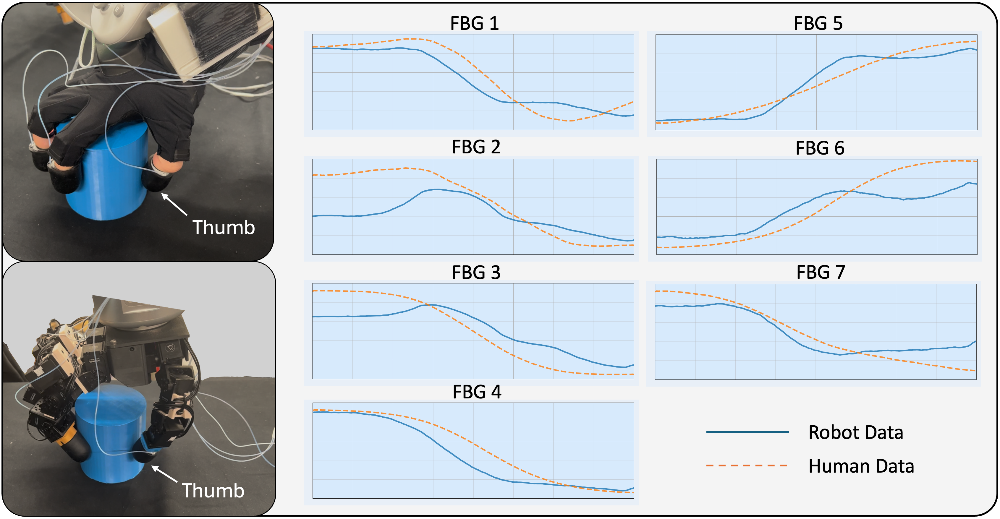
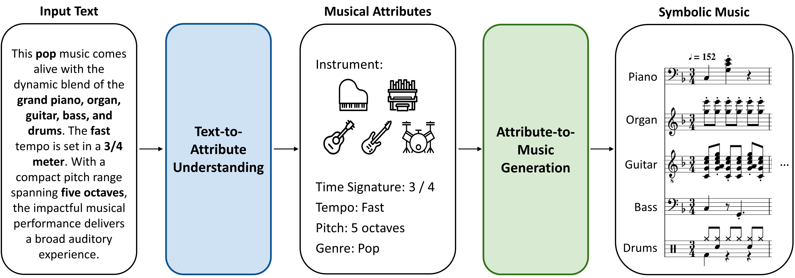

|
Chengyi Xing I am a Master's student in
CCRMA at
Stanford University.
I am currently doing research in the
Biomimetics & Dexterous Manipulation Laboratory,
advised by Prof. Mark Cutkosky and Prof. Elizabeth Schumann.
Broadly, my research interest lies in designing robotic hardware that are:
Currently, I am working on tactile sensors, focusing on wearable tactile sensors and whisker sensors for the underwater robot OceanOneK. Previously, I had the privilege of being advised by Prof. Wei-Shi Zheng at Sun Yat-Sen University, where I worked on dexterous hand manipulation. Email: chengyix at stanford dot edu / Google Scholar / LinkedIn |

|
Research(*equal contribution) |
|
|  |
Chengyi Xing*, Hao Li*, Yi-Lin Wei, Tian-Ao Ren, Tianyu Tu, Yuhao Lin, Elizabeth Schumann, Wei-Shi Zheng, Mark Cutkosky International Conference on Intelligent Robots and Systems (IROS), 2025 PDF / Project Page / arXiv TL;DR: Fingertip-wearable tactile sensor for data collection without a robot. Minimizes domain gap via human-robot sensor swap. Durable, easy-to-fabricate (~20 minutes per finger), 2kHz sampling rate, and EMI-resistant. |
Whisker-Inspired Tactile Sensing: A Sim2Real Approach for Precise Underwater Contact Tracking
Hao Li*, Chengyi Xing*, Saad Khan, Miaoya Zhong, Mark Cutkosky Robotics and Automation Letters (RA-L) PDF / Project Page / arXiv / Code TL;DR: Localize contacts with a casual transformer trained on simulation data in MuJoCo. Designed with optic fiber, the whisker sensors are suitable for the underwater robot OceanOneK and are resistant to salt erosion. |
|
Navigation and 3D Surface Reconstruction from Passive Whisker Sensing
Michael A. Lin, Hao Li, Chengyi Xing, Mark Cutkosky International Journal of Robotics Research (IJRR), Under Review PDF / Project Page / arXiv / Video / Code TL;DR: Non-intrusive contact localization using Hall effect sensors to prevent collisions. |
|
|
Grasp as You Say: Language-guided Dexterous Grasp Generation
Yi-Lin Wei, Jian-Jian Jiang, Chengyi Xing, Xiantuo Tan, Xiao-Ming Wu, Hao Li, Mark Cutkosky, Wei-Shi Zheng Neural Information Processing Systems (NeurIPS), 2024 PDF / Project Page / arXiv TL;DR: Synthesize a text-grasping dataset using GPT-4 from low-level hand-object features. Generate dexterous hand grasps with a diffusion model conditioned on CLIP-decoded text embeddings. |
|
|
Single-View Scene Point Cloud Human Grasp Generation
Yan-Kang Wang, Chengyi Xing, Yi-Lin Wei, Xiao-Ming Wu, Wei-Shi Zheng Computer Vision and Pattern Recognition Conference (CVPR) , 2024 PDF / arXiv TL;DR: Generate hand grasps on single-view scene point clouds, preventing penetration into unseen parts. |
|
|  |
Musecoco: Generating Symbolic Music from Text
Peiling Lu*, Xin Xu*, Chenfei Kang*, Botao Yu*, Chengyi Xing*, Xu Tan, Jiang Bian PDF / Project Page / arXiv / Code TL;DR: Synthesize a text-to-music dataset using GPT from extracted musical attributes. A two-stage text-to-music framework, BERT for text understanding and a transformer decoder for music generation. |
MiscI love jazz, J-POP, and AI-generated music (check out MusicFX DJ !) You can often find me either playing random music or working out at the gym. |